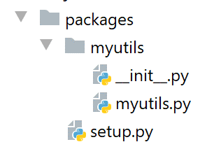

9. Le importazioni
L’errore riscontrato nella versione 1 dell’esercizio pratico ci porta ad approfondire il ruolo dell’istruzione [import].

9.1. Script [import_01]
Lo script [imported] verrà importato da diversi script (chiamati anche moduli):

# modulo importato
# questa istruzione verrà eseguita ogni volta che il modulo verrà importato
print("2")
# variabile appartenente al modulo importato
x=4
Un modulo viene eseguito al momento dell’importazione. Pertanto, quando verrà importato il modulo [imported]:
- verrà visualizzata la riga 3;
- la variabile x della riga 5 riceverà il suo valore;
Lo script [main_01] è il seguente:
# viene eseguito un modulo importato
import imported
# utilizzo della variabile x del modulo importato
print(imported.x)
- riga 2: il modulo [imported] viene importato. Ciò ne provocherà l’esecuzione:
- verrà visualizzato il valore 2;
- viene creata la variabile x con il valore 4;
- riga 4: si utilizza la variabile x del modulo importato;
In PyCharm viene segnalato un errore:
In [1], PyCharm indica che non riconosce il modulo [imported]. In termini tecnici, ciò significa che la cartella contenente il modulo [imported] non si trova nel Python Path di PyCharm. Il Python Path è l’insieme delle cartelle in cui vengono cercati i moduli importati. Per risolvere questo problema, è sufficiente specificare a [Sources root] la cartella in cui si trova il modulo [imported], in questo caso la cartella [import/01]:


Dopo questa operazione, la cartella [import/01] viene aggiunta al Python Path di PyCharm e l’errore scompare:

- in [1], la cartella [01] ha cambiato colore;
- in [2-3], l'errore non è più presente;
I risultati dell’esecuzione sono i seguenti:
Commenti
- la riga 2 è il risultato dell'esecuzione del modulo importato;
- la riga 3 mostra il valore della variabile x del modulo importato;
Da questo esempio si ricava il concetto importante secondo cui un modulo (o uno script) importato viene eseguito.
Lo script [main_02] è il seguente:
# si importa la variabile x dal modulo importato
from imported import x
# viene visualizzata
print(x)
- alla riga 2, si osserva un'altra sintassi di importazione: [from module import objet1, objet2, …]. Qui si importa la variabile [imported.x]. Con questa sintassi, la variabile x diventa una variabile dello script [main_02]. Non è più necessario anteporle il prefisso del modulo [imported];
- riga 4: si visualizza la variabile x di [main_02];
I risultati dell’esecuzione sono i seguenti:
Lo script [main_03] è il seguente:
# si importa tutto ciò che è visibile dal modulo importato
from imported import *
# si utilizza la variabile x del modulo importato
print(x)
La notazione [import *] nella riga 2 indica che vengono importati tutti gli oggetti visibili del modulo importato (variabili, funzioni).
I risultati sono i seguenti:
Lo script [main_04] è il seguente:
# si importa la variabile x dal modulo importato
# e la si rinomina y
from imported import x as y
# si visualizza la variabile y
print(y)
La riga 3 mostra che è possibile importare un oggetto dal modulo importato e assegnargli un alias. In questo caso, la variabile [imported.x] diventa la variabile [main_04.y]. I risultati sono gli stessi di prima.
9.2. Script [import_02]

Il modulo importato [module1.py] è il seguente:
# una funzione
def f1():
print("f1")
Il modulo importato definisce una funzione, un caso frequente.
Lo script [main_01] è il seguente:
# import
import module1
# esecuzione di f1
module1.f1()
- alla riga 2, il modulo viene importato. Verrà eseguito. In questo caso, non visualizza nulla;
- riga 4: viene eseguita la funzione [f1] del modulo importato;
I risultati dell’esecuzione sono i seguenti:
Nota: per evitare che PyCharm segnali un errore durante l’importazione della riga 2, è necessario inserire la cartella contenente [module1] all’interno di [Sources Root] di PyCharm:

In [1], la cartella [02] inserita in [Sources Root] è diventata blu. Si noti che l’errore segnalato non impedisce in questo caso la corretta esecuzione degli script. Infatti, durante l’esecuzione dello script [main_0x], la cartella dello script viene automaticamente aggiunta al Python Path. Di conseguenza, [module1] viene individuato. D'ora in poi, quando in uno screenshot una cartella appare in blu, significa che è stata inserita nel Python Path da [Sources Root] a PyCharm.
Lo script [main_02] è il seguente:
# import
from module1 import f1
# esecuzione di f1
f1()
- la riga 2 importa la funzione [f1] dal modulo [module1];
- alla riga 4 si utilizza la funzione f1;
I risultati sono identici a quelli dello script [main_01].
9.3. Script [import_03]

Nota: [03] si trova nella cartella [Sources Root] del progetto.
I nuovi script importeranno il modulo [module2], che non si trova nella stessa cartella in cui sono presenti gli script stessi.
Lo script [module2] è il seguente:
# una funzione
def f2():
print("f2")
Lo script definisce quindi una funzione [f2].
Lo script [main_01] è il seguente:
# importazione del modulo Class2
import dir1.module2
# esecuzione f2
dir1.module2.f2()
- riga 2: si utilizza una notazione speciale per indicare come individuare il modulo [module2]. [dir1.module2] va letto come il percorso [dir1/module2]: per trovare [module2], si parte dalla cartella dello script corrente [main_01], poi si passa a [dir1] e lì si trova [module2]. Non bisogna dimenticare che il punto di partenza del percorso è la cartella dello script che esegue l’importazione;
- riga 4: per eseguire la funzione [f2] da [module2];
I risultati sono i seguenti:
Riga 2, il risultato della funzione [f2].
Lo script [main_02] è il seguente:
# importazione del modulo dir1.module2, che viene rinominato
import dir1.module2 as module2
# esecuzione di f2
module2.f2()
Riga 2: si rinomina il modulo [dir1.module] per semplificare la scrittura della riga 4.
Lo script [main_03] è il seguente:
# importazione della funzione f2 dal modulo dir1.module2
from dir1.module2 import f2
# esecuzione di f2
f2()
Questa volta, alla riga 2, si importa solo la funzione [f2], che diventa quindi una funzione dello script [main_03] (riga 4).
Tutti questi script funzionano sia nel contesto di PyCharm che in quello di una console Python. Il motivo è che in entrambi i casi la cartella dello script eseguito, in questo caso la cartella [03], fa parte del Python Path. Di conseguenza, la cartella [dir1/module2] viene individuata.
9.4. Script [import_04]

In questo caso, le cartelle [dir1] e [dir2] sono state inserite nella cartella [Sources Root] del progetto PyCharm.
Il primo modulo importato è [module3]:
# una funzione
def f3():
print("f3")
Il secondo modulo importato è [module4]:
from module3 import f3
# una funzione
def f4():
f3()
print("f4")
- alla riga 1, si importa la funzione [f3] da [module3]. Qui, [module3] è visibile perché la sua cartella [dir1] è stata inserita in [Sources Root];
- righe 4-6: si definisce una funzione [f4] che richiama la funzione [f3] da [module3];
Lo script principale [main_01] è il seguente:
# si importa il modulo 4
from module4 import f4
# esecuzione f4
f4()
- alla riga 2 si importa il modulo [module4]. Questo è visibile poiché la sua cartella [dir2] è stata inserita nella cartella [Sources Root] di PyCharm;
- riga 4: esecuzione della funzione [f4] da [module4];
I risultati dell’esecuzione di [main_01] all’interno di PyCharm sono i seguenti:
Ora eseguiamo [main_01] in un terminale (console) Python:

I risultati sono i seguenti:
Cosa è successo? Il terminale Python non ha alcuna conoscenza del Python Path e dei file [Sources Root] e PyCharm. Ha un proprio Python Path. In esso è sempre presente la cartella dello script in esecuzione, in questo caso lo script [main_01]. Conosce quindi la cartella [import/04]. Nello script in esecuzione trova la riga:
from module4 import f4
L’interprete Python cerca [module4] nelle cartelle del proprio Python Path. Tuttavia, [module4] non si trova in [import/04] — che è effettivamente presente nel Python Path — ma in [import/04/dir2], che invece non vi è presente. Da qui l’errore.
Ci troviamo quindi di fronte a un problema già riscontrato in precedenza: uno script che funziona correttamente in PyCharm può bloccarsi nel contesto di un terminale Python. Si tratta di un problema ricorrente che dovremo risolvere.
9.5. Script [import_05]

Nota: le cartelle [dir1] e [dir2] sono inserite nel Python Path. Notiamo subito che c’è un conflitto: [module3] e [module4] si trovano in due posizioni diverse del Python Path di PyCharm:
- in [import/04/dir1] e [import/05/dir1] per [module3];
- in [import/04/dir2] e [import/05/dir2] per [module4];
È quindi possibile estrarre [import/04/dir1] e [import/04/dir2] dai [Sources Root] del progetto PyCharm. In questo caso, [import/05/dir1] è una copia di [import/04/dir1] (lo stesso vale per [dir2]) e quindi non vi è alcun problema. Va tuttavia notato che, all’interno dello stesso PyCharm, è necessario prestare attenzione all’elenco delle cartelle di [Sources Root] per evitare conflitti.
Lo script [main_01] diventa il seguente:
import sys
# si modifica il file sys.path per includervi le cartelle
# contenenti le classi da importare
sys.path.append(".")
sys.path.append("./dir1")
sys.path.append("./dir2")
# si importa il modulo4
from module4 import f4
# esecuzione f4
f4()
Stiamo cercando di risolvere il problema del Python Path. Ne vogliamo uno che funzioni bene sia su PyCharm che in un terminale Python. Per farlo, lo sistemeremo noi stessi.
- righe 4-6: aggiungiamo le cartelle [., ./dir1, ./dir2] al Python Path. Affinché funzioni, è necessario che la cartella corrente al momento dell’esecuzione sia la cartella [import/05]. Ciò sarà vero in PyCharm ma non necessariamente in un terminale Python, come vedremo;
- riga 8: si importa [module4]. In seguito a quanto appena fatto, dovrebbe essere individuato in [./dir2];
L’esecuzione in PyCharm fornisce i seguenti risultati:
Ora, in un terminale Python:
(venv) C:\Data\st-2020\dev\python\cours-2020\python3-flask-2020\import\05>python main_01.py
f3
f4
Riga 1: la cartella di esecuzione è [import/05].
Ora risaliamo di un livello nella struttura di [import/05]:
(venv) C:\Data\st-2020\dev\python\cours-2020\python3-flask-2020\import\05>cd ..
(venv) C:\Data\st-2020\dev\python\cours-2020\python3-flask-2020\import>python 05/main_01.py
Traceback (most recent call last):
File "05/main_01.py", line 8, in <module>
from module4 import f4
ModuleNotFoundError: No module named 'module4'
- riga 2: quando viene eseguito [main_01], non ci si trova più nella cartella [import/05] ma in [import]. Tuttavia, abbiamo scritto:
sys.path.append(".")
sys.path.append("./dir1")
sys.path.append("./dir2")
Questo aggiunge al Python Path le cartelle [import, import/dir1, import/dir2], che non è affatto ciò che vogliamo. Si noti che l'aggiunta al Python Path di cartelle inesistenti (import/dir1, import/dir2) non provoca errori.
Abbiamo fatto progressi, ma non è ancora sufficiente. È necessario aggiungere al Python Path non percorsi relativi, ma percorsi assoluti.
Lo script [main_02] è una variante di [main_01] che utilizza un file di configurazione [config.json]:
{
"dependencies": [
"C:/Data/st-2020/dev/python/cours-2020/python3-flask-2020/import/05/dir1",
"C:/Data/st-2020/dev/python/cours-2020/python3-flask-2020/import/05/dir2"
]
}
Il valore della chiave [dependencies] è l'elenco delle cartelle da aggiungere al Python Path. Da notare che in questo caso sono stati inseriti nomi assoluti e non relativi.
Lo script [main_02] utilizza il file [config.json] nel modo seguente:
import codecs
import json
import sys
# file di configurazione
config_filename="C:/Data/st-2020/dev/python/cours-2020/python3-flask-2020/import/05/config.json"
# lettura del file di configurazione json
with codecs.open(config_filename, "r", "utf-8") as file:
config = json.load(file)
# modifica di sys.path
for directory in config['dependencies']:
sys.path.append(directory)
# si importa il modulo 4
from module4 import f4
# esecuzione di f4
f4()
- riga 6: si noti che è stato utilizzato il nome assoluto del file di configurazione;
- righe 8-9: il file di configurazione viene letto. Con il suo contenuto viene costruito un dizionario [config] (riga 9);
- righe 11-13: si aggiungono gli elementi dell’array [config['dependencies']] al Python Path. Si noti che, poiché in [config.json] sono stati inseriti nomi assoluti di cartelle, al Python Path vengono aggiunti nomi assoluti;
- riga 16: viene importato [module4]. Dovremmo riuscire a trovarlo poiché ora [dir2] si trova nel Python Path;
L’esecuzione fornisce gli stessi risultati di [main_02], tranne per il fatto che lo script continua a funzionare anche quando la cartella di esecuzione non è più [import/05]:
(venv) C:\Data\st-2020\dev\python\cours-2020\python3-flask-2020\import>python 05/main_02.py
f3
f4
Riga 1, la cartella di esecuzione è [import].
Abbiamo fatto progressi. Abbiamo visto che:
- che dovevamo costruire il Python Path da soli;
- che bisognava inserirvi i percorsi assoluti di tutte le cartelle contenenti i moduli importati dall’applicazione;
Tuttavia, inserire nomi assoluti negli script non è una soluzione. Non appena il progetto viene trasferito su un altro sito, smette di funzionare. Dobbiamo trovare un’altra soluzione.
9.6. Script [import_06]

Nota: le cartelle [06, dir1, dir2] sono state inserite nelle cartelle [Sources Root] del progetto PyCharm. Le cartelle [dir1, dir2] sono identiche a quelle degli esempi precedenti.
Il file [config.json] è il seguente:
{
"rootDir": "C:/Data/st-2020/dev/python/cours-2020/v-02/imports/06",
"relativeDependencies": [
"dir1",
"dir2"
],
"absoluteDependencies": [
]
}
Introduciamo due tipi di percorsi:
- percorsi assoluti, righe 7-8;
- percorsi relativi, righe 3-6. Sono relativi alla radice della riga 2. Pertanto, quando il progetto viene spostato, è necessario modificare solo questa riga;
Lo script [utils.py] utilizza il file [config.json] e crea il Python Path:
# importazioni
import codecs
import json
import os
import sys
# configurazione dell'applicazione
def config_app(config_filename: str) -> dict:
# config_filename: nome del file di configurazione
# si consente la segnalazione delle eccezioni
# elaborazione del file di configurazione
with codecs.open(config_filename, "r", "utf-8") as file:
config = json.load(file)
# aggiunta delle dipendenze a sys.path
rootDir = config['rootDir']
# si aggiungono le dipendenze relative al progetto al syspath
for directory in config['relativeDependencies']:
# si aggiunge la dipendenza all'inizio del syspath
sys.path.insert(0, f"{rootDir}/{directory}")
# si aggiungono le dipendenze assolute del progetto al syspath
for directory in config['absoluteDependencies']:
# si aggiunge la dipendenza all'inizio del syspath
sys.path.insert(0, directory)
# si crea il dizionario di configurazione
return config
# cartella dello script eseguito
def get_scriptdir():
return os.path.dirname(os.path.abspath(__file__))
- riga 8: la funzione [config_app] riceve come parametro il nome del file di configurazione;
- righe 12-14: il file di configurazione viene utilizzato per creare il dizionario [config];
- riga 20: [sys.path] è l'elenco delle cartelle del Python Path;
- righe 17-20: le dipendenze relative al file di configurazione vengono aggiunte al Python Path. Vengono inserite all’inizio dell’array [sys.path], riga 20. Infatti, quando Python cerca un modulo, esplora le cartelle del [sys.path] in ordine. Tuttavia, in questo documento, moduli con lo stesso nome si troveranno in cartelle diverse del [sys.path]. Inserendo le dipendenze dell’applicazione all’inizio della tabella [sys.path], ci si assicura che queste vengano esplorate prima delle altre cartelle del [sys.path] che potrebbero contenere moduli con lo stesso nome;
- righe 21-24: le dipendenze assolute del file di configurazione vengono aggiunte al Python Path;
- riga 26: si restituisce la configurazione dell’applicazione;
- righe 29-30: la funzione [get_scriptdir] restituisce il percorso assoluto della cartella dello script in esecuzione (quella in cui si trova la chiamata alla funzione);
Lo script principale [main] è il seguente:
# importazioni
import sys
from utils import config_app
def affiche_path(msg: str):
# messaggio
print(f"{msg}------------------------------")
# sys.path
for path in sys.path:
print(path)
# main -------------
try:
# il sys.path è configurato
affiche_path("avant....")
config = config_app(f"{get_scriptdir()}/config.json")
affiche_path("après....")
# si importa il modulo 4
from module4 import f4
# esecuzione f4
f4()
except BaseException as erreur:
print(f"L'erreur suivante s'est produite : {erreur}")
finally:
print("done")
- riga 4: viene importata la funzione [config_app]. Si noti che, poiché [utils] e [main] si trovano nella stessa cartella, questa funzione [import] funziona sempre. Infatti, la cartella dello script principale viene automaticamente aggiunta al Python Path;
- righe 7-12: la funzione [affiche_path] visualizza l’elenco delle cartelle del Python Path;
- riga 19: si configura l’applicazione. Si noti che alla funzione [config_app] viene passato il percorso assoluto del file di configurazione. Dopo questa istruzione, il Python Path è stato ricostruito;
- riga 22: si importa [module4]. Grazie alla ricostruzione del Python Path, questo modulo verrà individuato;
- riga 24: si esegue la funzione [f4];
Nel contesto PyCharm, i risultati dell’esecuzione sono i seguenti:
C:\Data\st-2020\dev\python\cours-2020\python3-flask-2020\venv\Scripts\python.exe C:/Data/st-2020/dev/python/cours-2020/python3-flask-2020/import/06/main.py
avant....------------------------------
C:\Data\st-2020\dev\python\cours-2020\python3-flask-2020\import\06
C:\Data\st-2020\dev\python\cours-2020\python3-flask-2020
C:\Data\st-2020\dev\python\cours-2020\python3-flask-2020\fonctions\shared
C:\Data\st-2020\dev\python\cours-2020\python3-flask-2020\impots\v01\shared
…
C:\Program Files\Python38\python38.zip
C:\Program Files\Python38\DLLs
C:\Program Files\Python38\lib
C:\Program Files\Python38
C:\Data\st-2020\dev\python\cours-2020\python3-flask-2020\venv
C:\Data\st-2020\dev\python\cours-2020\python3-flask-2020\venv\lib\site-packages
après....------------------------------
C:/Data/st-2020/dev/python/cours-2020/v-02/imports/06/dir2
C:/Data/st-2020/dev/python/cours-2020/v-02/imports/06/dir1
C:\Data\st-2020\dev\python\cours-2020\python3-flask-2020\import\06
C:\Data\st-2020\dev\python\cours-2020\python3-flask-2020
C:\Data\st-2020\dev\python\cours-2020\python3-flask-2020\fonctions\shared
C:\Data\st-2020\dev\python\cours-2020\python3-flask-2020\impots\v01\shared
….
C:\Program Files\Python38\python38.zip
C:\Program Files\Python38\DLLs
C:\Program Files\Python38\lib
C:\Program Files\Python38
C:\Data\st-2020\dev\python\cours-2020\python3-flask-2020\venv
C:\Data\st-2020\dev\python\cours-2020\python3-flask-2020\venv\lib\site-packages
f3
f4
done
Process finished with exit code 0
Commenti
- righe 2-13: il Python Path di PyCharm. Vi si trovano tutte le cartelle inserite nel [Sources Root] del progetto;
- righe 14-29: il Python Path costruito dalla funzione [config_app]. Alle righe 15-16 si trovano le due dipendenze che abbiamo aggiunto;
- righe 22-27: le cartelle di sistema dell’interprete Python che ha eseguito lo script;
- righe 28-29: l'esecuzione procede normalmente;
Ora passiamo al contesto che finora causava un errore di esecuzione:
- ci si posiziona in un terminale Python;
- ci spostiamo in una cartella diversa da quella contenente lo script in esecuzione;
(venv) C:\Data\st-2020\dev\python\cours-2020\python3-flask-2020\import>python 06/main.py
avant....------------------------------
C:\Data\st-2020\dev\python\cours-2020\python3-flask-2020\import\06
C:\Program Files\Python38\python38.zip
C:\Program Files\Python38\DLLs
C:\Program Files\Python38\lib
C:\Program Files\Python38
C:\Data\st-2020\dev\python\cours-2020\python3-flask-2020\venv
C:\Data\st-2020\dev\python\cours-2020\python3-flask-2020\venv\lib\site-packages
après....------------------------------
C:/Data/st-2020/dev/python/cours-2020/v-02/imports/06/dir2
C:/Data/st-2020/dev/python/cours-2020/v-02/imports/06/dir1
C:\Data\st-2020\dev\python\cours-2020\python3-flask-2020\import\06
C:\Program Files\Python38\python38.zip
C:\Program Files\Python38\DLLs
C:\Program Files\Python38\lib
C:\Program Files\Python38
C:\Data\st-2020\dev\python\cours-2020\python3-flask-2020\venv
C:\Data\st-2020\dev\python\cours-2020\python3-flask-2020\venv\lib\site-packages
f3
f4
done
Questa volta funziona (righe 20-21). Si noti che [sys.path] non contiene le stesse cartelle rispetto a quando l’esecuzione avviene sotto PyCharm.
9.7. Script [import_07]
Miglioriamo la soluzione precedente in due modi:
- sostituiamo il file di configurazione [config.json] con uno script [config.py]. Infatti, il file jSON presenta un problema rilevante: non può essere commentato. Il dizionario [config.json] può essere sostituito da un dizionario Python che ha il vantaggio di poter essere commentato;
- utilizziamo un modulo visibile a tutti i progetti Python presenti sul computer;
9.7.1. Installazione di un modulo a livello di macchina

Qui sopra creiamo una cartella [packages/myutils] all’interno del progetto PyCharm (i nomi non hanno importanza).
Lo script [myutils.py] è il seguente:
# importazioni
import sys
import os
def set_syspath(absolute_dependencies: list):
# absolute_dependencies: un elenco di nomi assoluti di cartelle
# si aggiungono al syspath i percorsi assoluti delle dipendenze del progetto
for directory in absolute_dependencies:
# si verifica l'esistenza della cartella
existe = os.path.exists(directory) and os.path.isdir(directory)
if not existe:
# viene generata un'eccezione
raise BaseException(f"[set_syspath] le dossier du Python Path [{directory}] n'existe pas")
else:
# si aggiunge la cartella all'inizio del syspath
sys.path.insert(0, directory)
- righe 6-18: la funzione [set_syspath] crea un Python Path con l'elenco delle cartelle che le vengono passate come parametro;
- righe 12-15: si verifica che la cartella da inserire nel Python Path esista;
Lo script [__init.py__] (due trattini bassi prima e dopo il nome; questo è obbligatorio) è il seguente:
from .myutils import set_syspath
Si importa la funzione [set_syspath] dallo script [myutils]. La notazione [.myutils] indica il percorso [./myutils], quindi lo script [myutils] si trova nella stessa cartella di [__init.py]. Si sarebbe potuto utilizzare la notazione [myutils]. Tuttavia, creeremo un modulo [myutils] con ambito a livello di macchina. Di conseguenza, la notazione [from myutils import set_syspath] diventerebbe ambigua. Si tratta di importare lo script [myutils] dalla cartella corrente o lo script [myutils] a livello di macchina? La notazione [.myutils] elimina questa ambiguità.
Lo script [setup.py] (anche in questo caso il nome è predefinito) è il seguente:
from setuptools import setup
setup(name='myutils',
version='0.1',
description='Utilitaire fixant le Python Path',
url='#',
author='st',
author_email='st@gmail.com',
license='MIT',
packages=['myutils'],
zip_safe=False)
In questo script viene descritto il modulo che verrà creato. In questo caso, lo creeremo localmente. Tuttavia, lo stesso processo viene utilizzato per creare un modulo distribuito ufficialmente (cfr. |pypi|). I punti importanti sono i seguenti:
- riga 3: il nome del modulo creato;
- riga 4: la versione del modulo;
- riga 5: la sua descrizione;
- righe 7-8: l'autore del modulo;
Per installare questo modulo con ambito locale, si procede come segue:

Quindi, nel terminale Python, si digita il seguente comando [pip install .]:
(venv) C:\Data\st-2020\dev\python\cours-2020\python3-flask-2020\packages>pip install .
Processing c:\data\st-2020\dev\python\cours-2020\python3-flask-2020\packages
Using legacy setup.py install for myutils, since package 'wheel' is not installed.
Installing collected packages: myutils
Attempting uninstall: myutils
Found existing installation: myutils 0.1
Uninstalling myutils-0.1:
Successfully uninstalled myutils-0.1
Running setup.py install for myutils ... done
Successfully installed myutils-0.1
Da questo momento in poi, qualsiasi script della macchina potrà importare il modulo [myutils] senza che questo sia presente nel codice del progetto.
9.7.2. Lo script [config.py]

Lo script [config.py] garantisce la configurazione dell’applicazione:
def configure():
import os
# percorso assoluto della cartella dello script di configurazione
script_dir = os.path.dirname(os.path.abspath(__file__))
# percorsi assoluti delle cartelle da inserire nel syspath
absolute_dependencies = [
# cartelle locali
f"{script_dir}/dir1",
f"{script_dir}/dir2",
]
# aggiornamento del syspath
from myutils import set_syspath
set_syspath(absolute_dependencies)
# si restituisce la configurazione
return {}
- riga 1: la funzione [configure] garantisce la configurazione dell’applicazione;
- righe 7-10: il dizionario che prima si trovava in [config.json];
- righe 9-10: poiché ci si trova in uno script, è possibile ottenere direttamente i nomi assoluti delle cartelle [dir1, dir2];
- righe 12-14: si utilizza la funzione [set_syspath] del modulo [myutils] che abbiamo appena creato per definire il Python Path della configurazione;
- riga 20: restituiamo il dizionario della configurazione dell’applicazione. In questo caso, è vuoto;
9.7.3. Lo script [main.py]
Lo script principale [main] è il seguente:
# si configura l'applicazione
import config
config = config.configure()
# il syspath è configurato - è possibile eseguire le importazioni
from module4 import f4
# main -------------
try:
f4()
except BaseException as erreur:
print(f"L'erreur suivante s'est produite : {erreur}")
finally:
print("done")
- righe 2-4: si configura l’applicazione utilizzando il modulo [config.py]. Questo è accessibile poiché si trova nella stessa cartella dello script principale. La cartella dello script principale fa sempre parte del Python Path;
- quando si arriva alla riga 6, il Python Path è stato costruito includendo al suo interno la cartella del modulo [module4]. È quindi possibile importarlo alla riga 7;
- righe 10-15: non resta che eseguire la funzione [f4];
I risultati dell’esecuzione in PyCharm sono i seguenti:
In un terminale Python e in una cartella diversa da quella dello script principale, i risultati sono i seguenti:
D'ora in poi procederemo sempre allo stesso modo per configurare un'applicazione:
- presenza di uno script [config.py] nella cartella dello script principale. Questo script contiene una funzione [configure] che ha due obiettivi:
- creare il Python Path per l’applicazione. A tal fine, [config.py] identifica tutte le cartelle contenenti i moduli utilizzati dall’applicazione e crea il Python Path con i loro nomi assoluti;
- costruire il dizionario [config] della configurazione dell’applicazione;
Applichiamo questo schema alla seconda versione dell’esercizio pratico. Ricordiamo infatti che la versione 1 funzionava nell’ambiente PyCharm ma non in un terminale Python. Il problema era dovuto al Python Path.